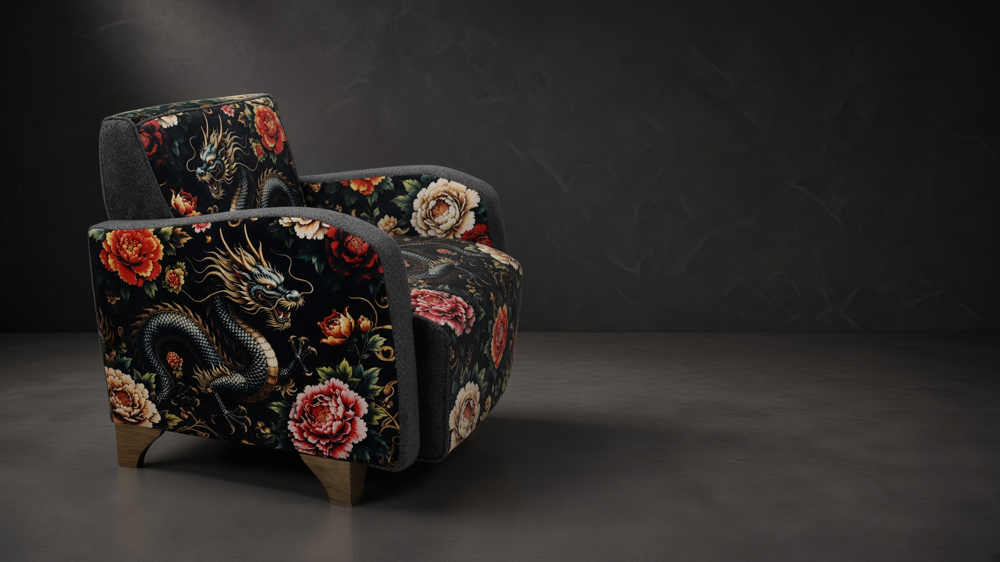

Dragão
Presença e movimento.

KARV EDITION
Presença em movimento.
Uma composição KARV onde expressão, profundidade e equilíbrio ocupam o mesmo espaço.
Descobrir RYUJIN
PRESENÇA
Na RYUJIN, o desenho percorre a poltrona como movimento. A composição ganha força sem perder silêncio, proporção ou equilíbrio.
COMPOSIÇÃO

Presença e movimento.
Profundidade e expressão.
Pausa, contorno e equilíbrio.

MATÉRIA
Mudanças de textura, contraste e escala definem a passagem entre os revestimentos e alteram a percepção da peça conforme a distância e a luz.
DETALHES DE DESIGN
Proporções, costuras, encontros, volumes e pés de madeira permanecem parte essencial da identidade KARV. A edição acontece através da composição dos revestimentos.

OUTRA POSSIBILIDADE
A KARV pode desenvolver uma proposta diferente de revestimentos mantendo a identidade e a estrutura original da poltrona.
Conversar sobre outra composição
KARV RYUJIN
Uma edição construída para existir como composição completa — forma, matéria e presença.
Falar com a KARV